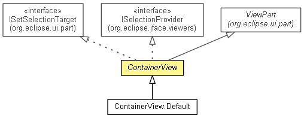

org.eclipse.net4j.util.ui.views
Class ContainerView
java.lang.Object
 org.eclipse.core.commands.common.EventManager
org.eclipse.ui.part.WorkbenchPart
org.eclipse.ui.part.ViewPart
org.eclipse.net4j.util.ui.views.ContainerView
org.eclipse.core.commands.common.EventManager
org.eclipse.ui.part.WorkbenchPart
org.eclipse.ui.part.ViewPart
org.eclipse.net4j.util.ui.views.ContainerView
- All Implemented Interfaces:
- IAdaptable, IExecutableExtension, ISelectionProvider, IPersistable, IViewPart, IWorkbenchPart, IWorkbenchPart2, IWorkbenchPart3, ISetSelectionTarget, IWorkbenchPartOrientation
- Direct Known Subclasses:
- ContainerView.Default
- public abstract class ContainerView
- extends ViewPart
- implements ISelectionProvider, ISetSelectionTarget

| Methods inherited from class org.eclipse.ui.part.WorkbenchPart |
addPartPropertyListener, addPropertyListener, dispose, firePartPropertyChanged, firePropertyChange, getAdapter, getConfigurationElement, getContentDescription, getDefaultImage, getOrientation, getPartName, getPartProperties, getPartProperty, getSite, getTitle, getTitleImage, getTitleToolTip, removePartPropertyListener, removePropertyListener, setPartProperty, setSite, setTitle, setTitleImage, setTitleToolTip, showBusy |
| Methods inherited from class java.lang.Object |
clone, equals, finalize, getClass, hashCode, notify, notifyAll, toString, wait, wait, wait |
ContainerView
public ContainerView()
getShell
public Shell getShell()
getViewer
public TreeViewer getViewer()
setFocus
public void setFocus()
- Specified by:
setFocus in interface IWorkbenchPart- Specified by:
setFocus in class WorkbenchPart
resetInput
public void resetInput()
getSelection
public ISelection getSelection()
- Specified by:
getSelection in interface ISelectionProvider
- Since:
- 3.0
setSelection
public void setSelection(ISelection selection)
- Specified by:
setSelection in interface ISelectionProvider
- Since:
- 3.0
addSelectionChangedListener
public void addSelectionChangedListener(ISelectionChangedListener listener)
- Specified by:
addSelectionChangedListener in interface ISelectionProvider
- Since:
- 3.0
removeSelectionChangedListener
public void removeSelectionChangedListener(ISelectionChangedListener listener)
- Specified by:
removeSelectionChangedListener in interface ISelectionProvider
- Since:
- 3.0
selectReveal
public void selectReveal(ISelection selection)
- Specified by:
selectReveal in interface ISetSelectionTarget
createPartControl
public final void createPartControl(Composite parent)
- Specified by:
createPartControl in interface IWorkbenchPart- Specified by:
createPartControl in class WorkbenchPart
createUI
protected Control createUI(Composite parent)
createdUI
protected void createdUI()
- Since:
- 3.1
initViewer
protected void initViewer()
- Since:
- 3.1
createContentProvider
protected IContentProvider createContentProvider()
- Since:
- 3.0
createLabelProvider
protected IBaseLabelProvider createLabelProvider()
- Since:
- 3.0
createLabelDecorator
protected ILabelDecorator createLabelDecorator()
- Since:
- 3.0
createContainerItemProvider
protected ContainerItemProvider<IContainer<Object>> createContainerItemProvider()
getElementText
protected String getElementText(Object element)
getElementImage
protected Image getElementImage(Object element)
getElementForeground
protected Color getElementForeground(Object element)
- Since:
- 3.0
getElementBackground
protected Color getElementBackground(Object element)
- Since:
- 3.0
getElementFont
protected Font getElementFont(Object element)
- Since:
- 3.0
getRootElementFilter
protected IElementFilter getRootElementFilter()
getContainer
protected abstract IContainer<?> getContainer()
hookDoubleClick
protected void hookDoubleClick()
hookContextMenu
protected void hookContextMenu()
contributeToActionBars
protected void contributeToActionBars()
fillLocalPullDown
protected void fillLocalPullDown(IMenuManager manager)
fillLocalToolBar
protected void fillLocalToolBar(IToolBarManager manager)
fillContextMenu
protected void fillContextMenu(IMenuManager manager,
ITreeSelection selection)
selectionChanged
protected void selectionChanged(IActionBars bars,
ITreeSelection selection)
doubleClicked
protected void doubleClicked(Object object)
refreshPressed
protected void refreshPressed()
- Since:
- 3.1
closeView
protected void closeView()
showMessage
protected void showMessage(String message)
showMessage
protected boolean showMessage(ContainerView.MessageType type,
String message)
getRefreshAction
protected Action getRefreshAction()
- Since:
- 3.1
getDisplay
protected Display getDisplay()
refreshViewer
public void refreshViewer(boolean updateLabels)
refreshElement
public void refreshElement(Object element,
boolean updateLabels)
updateLabels
public void updateLabels(Object element)
revealElement
public void revealElement(Object element)
getAddImageDescriptor
public static ImageDescriptor getAddImageDescriptor()
getDeleteImageDescriptor
public static ImageDescriptor getDeleteImageDescriptor()
getRefreshImageDescriptor
public static ImageDescriptor getRefreshImageDescriptor()
Copyright (c) 2004 - 2012 Eike Stepper (Berlin, Germany) and others.